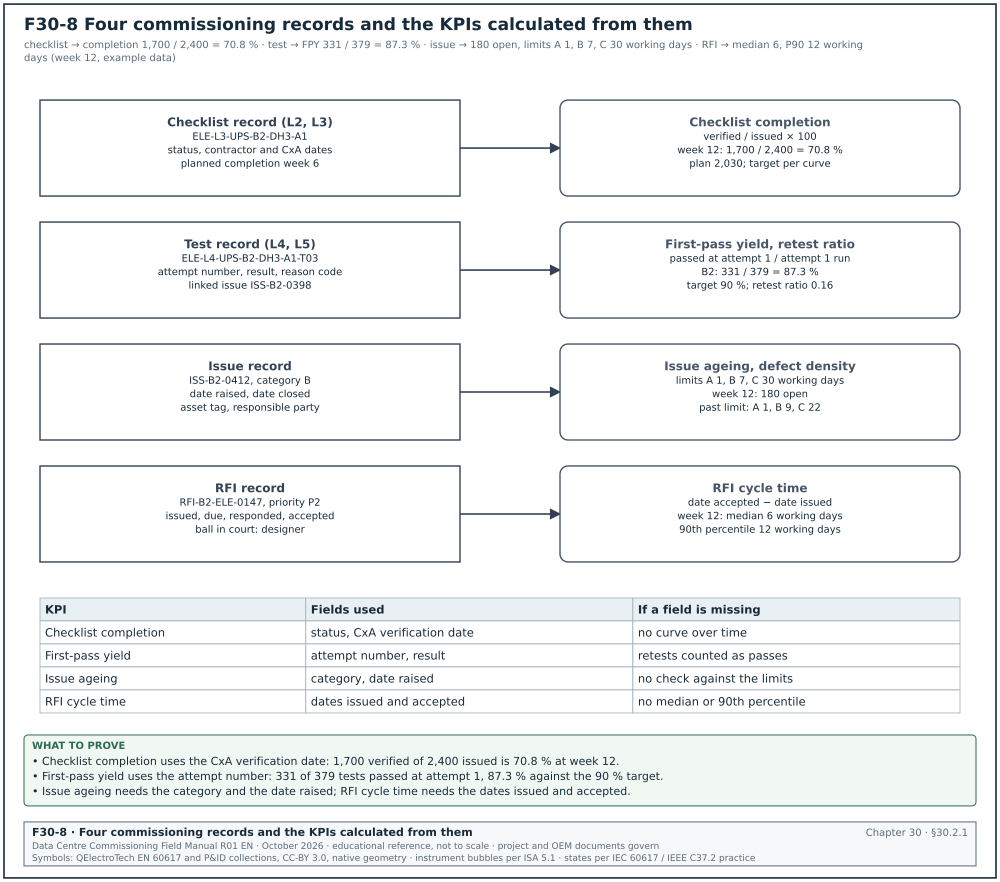
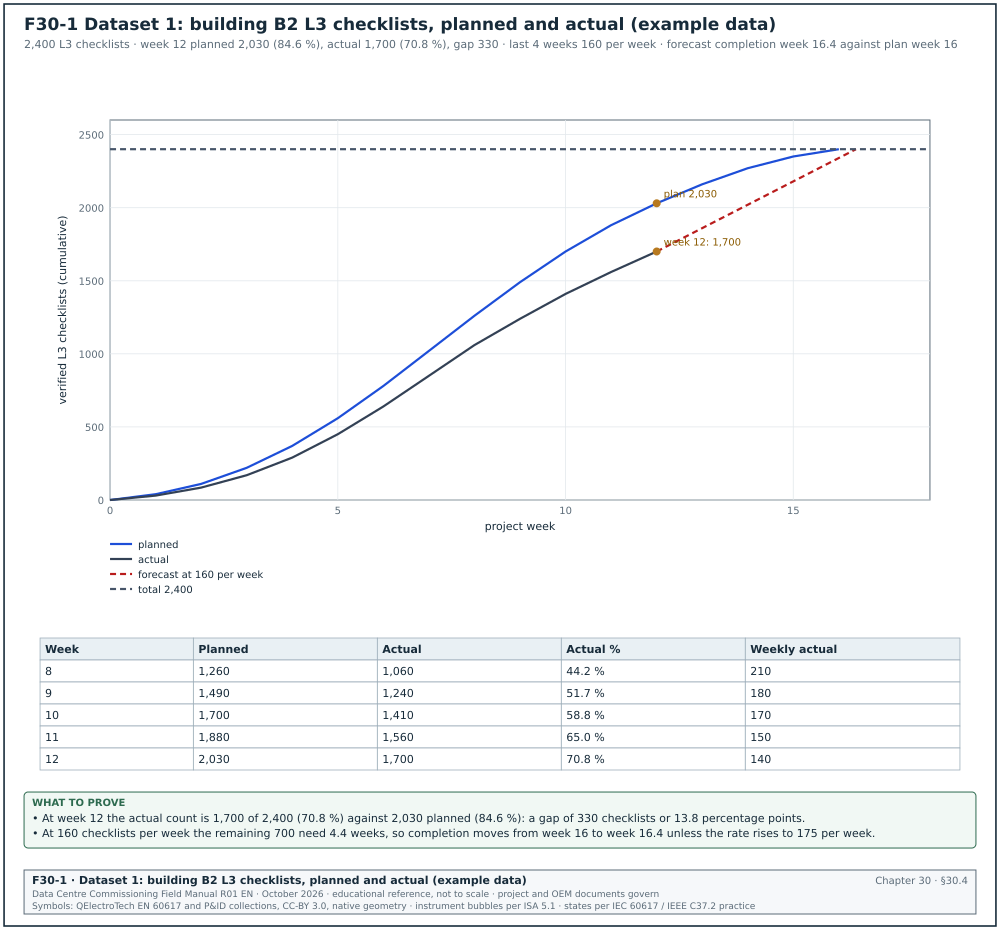
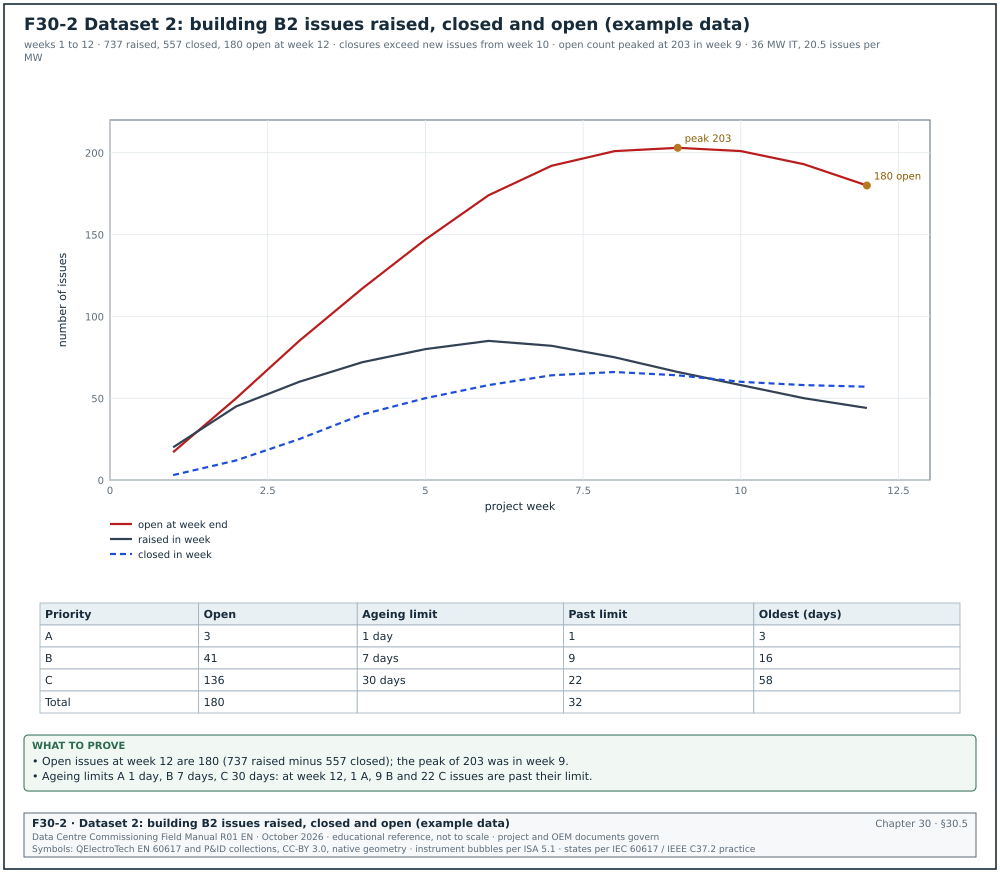
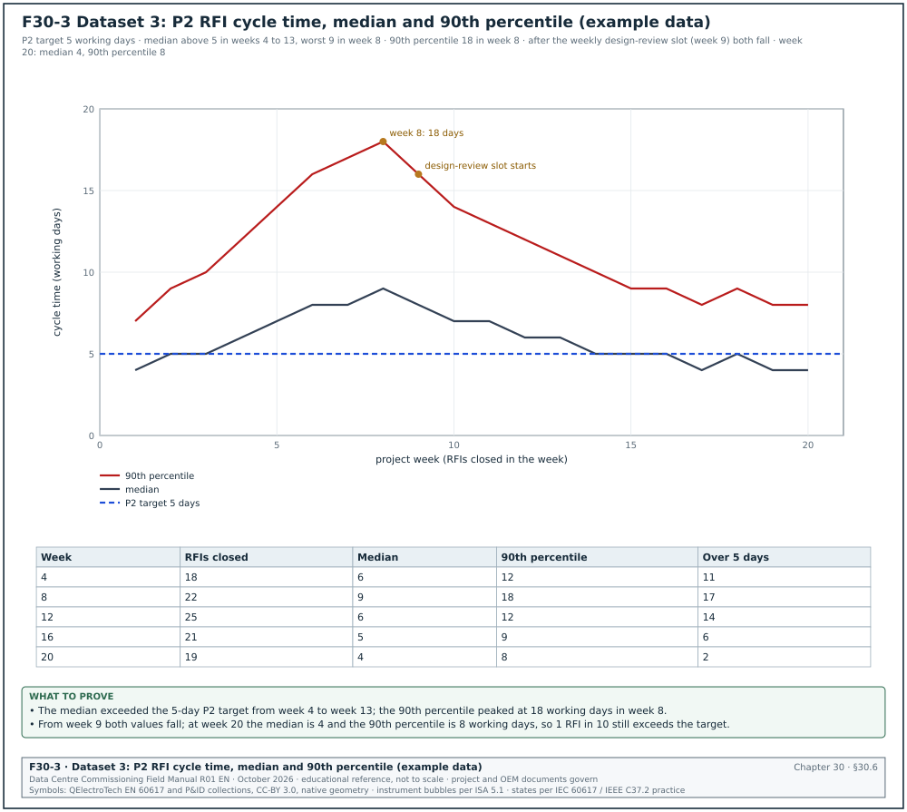
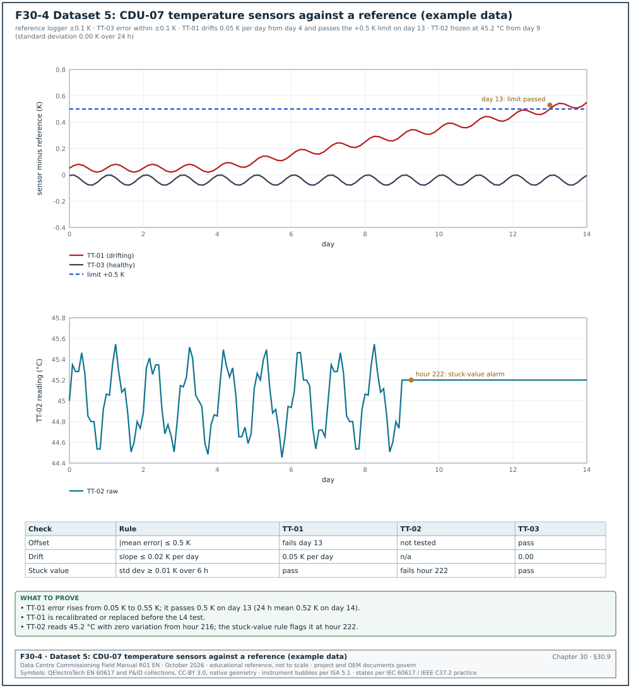
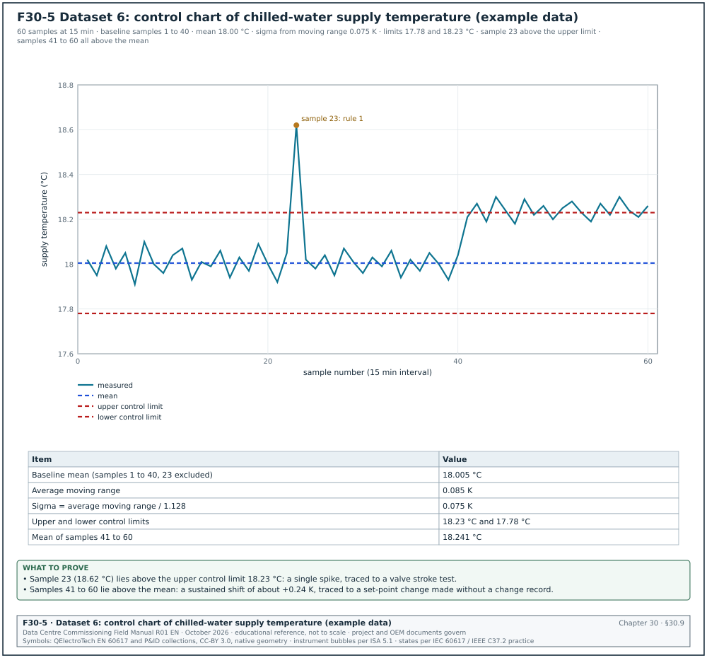
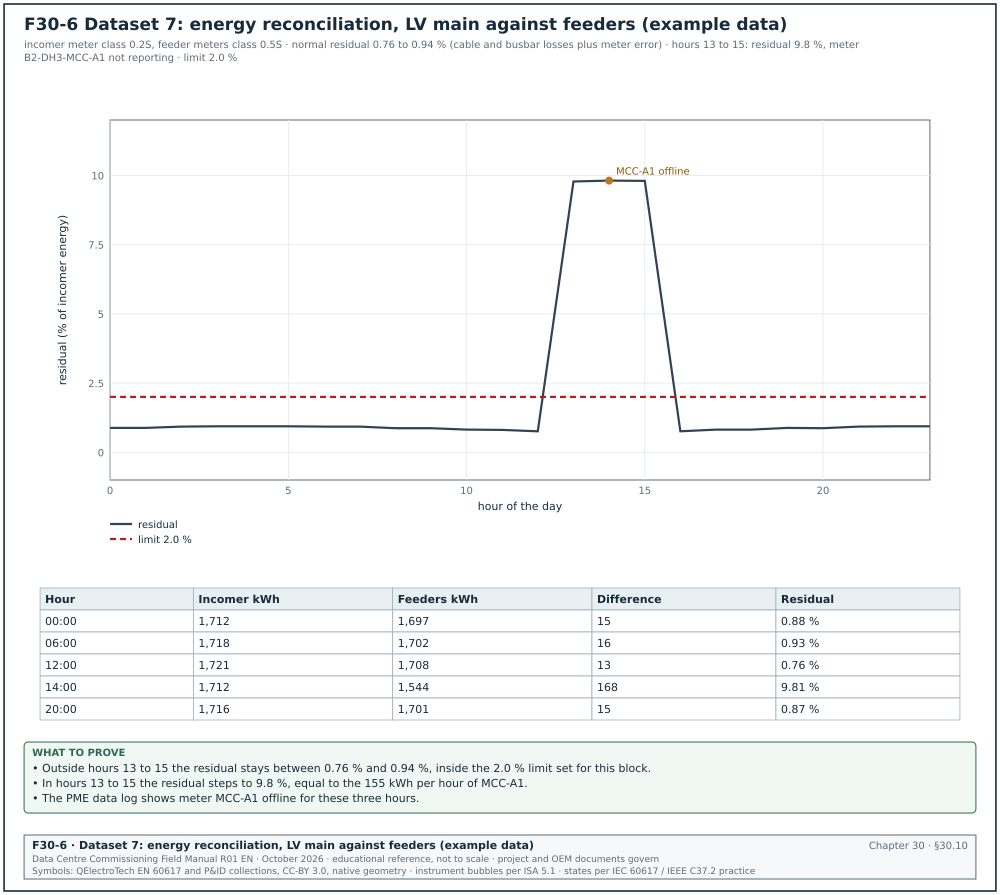
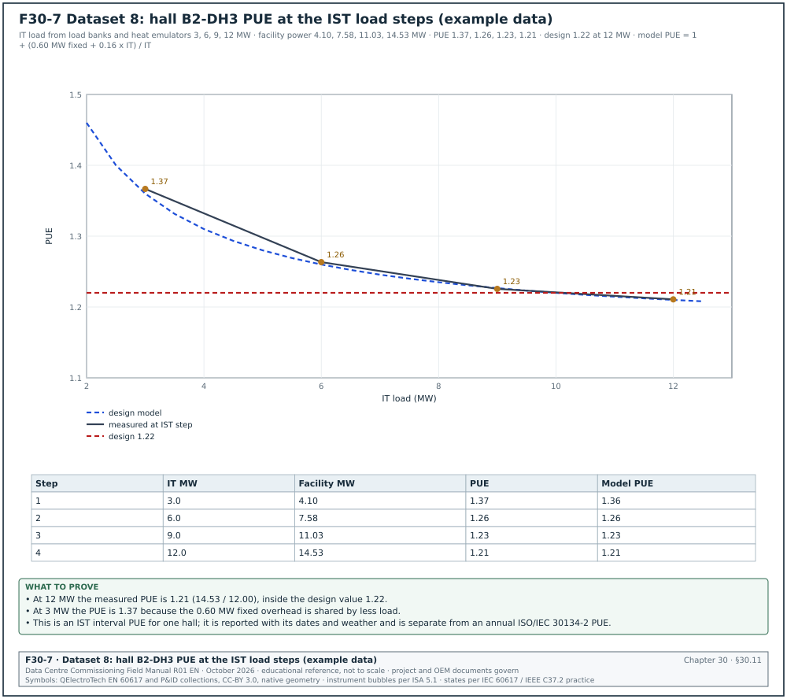
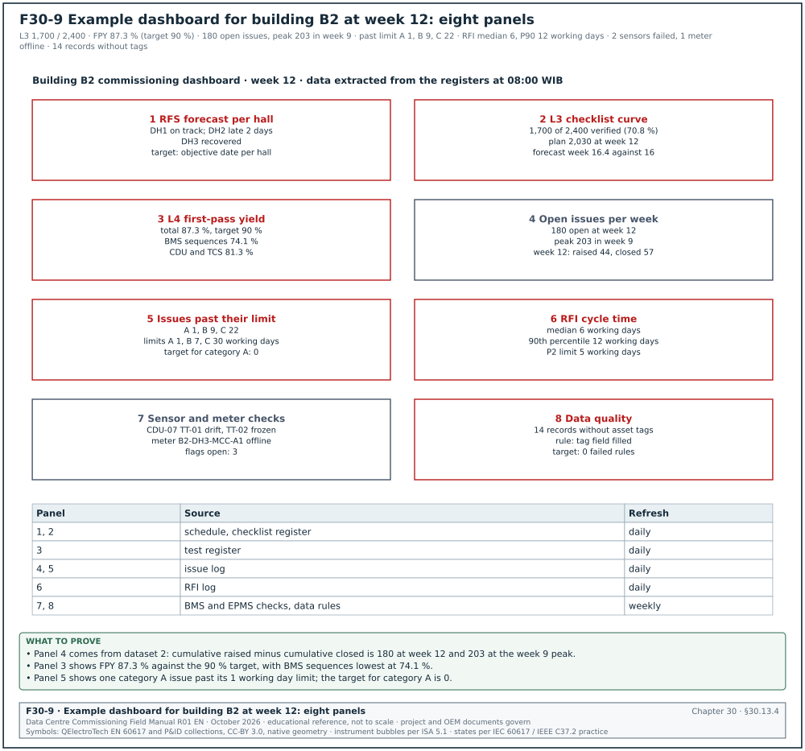

30.0Scope of this chapter
This chapter explains how the commissioning manager collects, checks and uses commissioning data on a data-centre campus. It defines the key performance indicators (KPIs) used to track commissioning, gives the formula for each, and works through eight example datasets with numbers, tables and plots. It also covers how to read trends from the building management system (BMS) and the electrical power monitoring system (EPMS), and the statistical checks that find bad sensors and bad meters. The last sections cover energy reconciliation between meters, power usage effectiveness (PUE) measured during commissioning, data-quality checks and dashboard design.
- Data sources and owners. Where commissioning data comes from, who owns each source and how often it is updated.
- Record structures. The fields of the checklist, test, issue and request for information (RFI) records that the KPIs are calculated from.
- KPI definitions. Checklist completion, test first-pass yield (FPY), retest ratio, issue ageing, RFI cycle time, defect density per MW, issue closure rate and forecast completion, each with a formula, a unit, a target and an example.
- Worked datasets. Eight example datasets for the MSC-1 campus. They cover L3 checklist progress, the issue log, RFI cycle time, L4 test results, sensor drift and stuck values and a control chart. They also cover energy reconciliation and PUE at the load steps of the integrated systems test (IST).
- Reading trends. Sampling interval, change-of-value logging, time alignment, units and the trend review procedure.
- Statistical checks. Outliers by interquartile-range fences, Shewhart control charts with the Western Electric rules, drift against a reference, cumulative sum (CUSUM) charts, stuck values, flat lines and rate-of-change limits.
- Energy reconciliation. Balancing an incoming meter against its downstream meters, with tolerances based on meter accuracy class.
- PUE during commissioning. What can and cannot be measured during load-bank testing, the formula, the categories, and a worked example.
- Data quality. Completeness, validity, timeliness, consistency, uniqueness and accuracy checks with rules.
- Dashboards. Content by audience, layout, refresh and the rules that keep numbers consistent between reports.
Documents and standards used: ISO/IEC 30134-2:2026 (PUE, edition 2, which replaced the 2016 edition) and The Green Grid PUE white papers; NIST/SEMATECH e-Handbook of Statistical Methods (outliers, control charts, CUSUM); ASHRAE Guideline 14 (measurement of energy, demand and water savings; model calibration limits). The chapter also uses ASHRAE Guideline 0-2019 (the commissioning process); IEC 62053-22 and IEC 61557-12 (meter and power metering device accuracy); ANSI/ASHRAE Standard 135 (BACnet trend log objects). The data-quality sources are ISO/IEC 25012 (data quality model), ISO 8000 (data quality) and the American Society for Quality (ASQ) definition of first-pass yield. Numbers in the worked datasets are example data, labelled as example data, and consistent with the MSC-1 case ledger (source 19).
30.1Commissioning data sources and owners
30.1.1What commissioning data is
Commissioning data is every recorded value that shows the state of the commissioning work or the behaviour of the installed systems. It falls into two groups. Process data describes the work: checklists signed, tests passed, issues raised and closed, RFIs answered. System data describes the plant: temperatures, flows, pressures, voltages, currents, energy, alarms and events recorded by the BMS, the EPMS, data loggers and test instruments.
Process data tells the manager whether the programme will meet its date. System data tells the commissioning authority (CxA) whether the plant meets its design.
30.1.2Sources on a hyperscale campus
| Source | Type | Owner | Update frequency | Used for |
|---|---|---|---|---|
| Commissioning database (checklists, tests) | process | commissioning authority (CxA) | real time as forms are signed | checklist completion, FPY, retest ratio |
| Issue log | process | CxA, with general contractor (GC) responses | real time | issue ageing, defect density, closure rate |
| RFI log in the common data environment (CDE) | process | GC document controller | real time | RFI cycle time |
| Commissioning schedule | process | GC planner, commissioning manager (CxM) review | weekly | planned curves, forecast |
| BMS trend logs | system | BMS contractor | 1 s to 15 min per point | sequence tests, temperature and flow trends |
| EPMS (for example Schneider EcoStruxure Power Monitoring Expert) | system | EPMS contractor | 1 s to 15 min; waveforms on event | energy, power quality, sequence of events |
| Portable data loggers | system | CxA test engineer | 1 s to 1 min | IST, heat-run, reference measurements |
| Load-bank controllers | system | load-bank supplier | 1 s | IST load steps |
| Test instruments (relay test sets, power analysers) | system | test contractor | per test | test records |
30.1.3Ownership rules
- One owner per source. Each source has a named owner who answers for completeness and accuracy. The owner is listed in the commissioning plan.
- One master record per item. A checklist, test or issue exists in one system only. Spreadsheet copies are reports, never masters.
- Fixed identifiers. Every record carries the asset tag from the project tagging standard (for example B2-DH3-UPS-A1). KPIs grouped by building, hall or system depend on correct tags.
- Data date on every report. Every KPI report states the date and time the data was extracted.
- Time base. All system data uses one time base. The BMS, EPMS and loggers are synchronised to the site time server using the Network Time Protocol (NTP) or the Precision Time Protocol (PTP). Every export states the time zone (Western Indonesian Time, WIB, UTC+7 in Jakarta).
30.2Record structures and data fields
30.2.1Why the fields matter
Each KPI is calculated from the fields of a record. If the checklist record has no "date signed" field, completion over time cannot be plotted. If the issue record has no category field, ageing against the limits cannot be checked. The tables below give the minimum fields, each with a type and an example value from MSC-1. Figure F30-8 shows the four record types and the KPIs that are calculated from their fields.


30.2.2Checklist record (L2 and L3)
| Field | Type | Example |
|---|---|---|
| Checklist ID | text | ELE-L3-UPS-B2-DH3-A1 |
| Level | list (L1 to L5) | L3 |
| System | list | uninterruptible power supply (UPS) |
| Asset tag | text | B2-DH3-UPS-A1 |
| Building, hall | text | B2, DH3 |
| Issued date | date | 05 Jan |
| Contractor signature date | date | 28 Jan |
| CxA verification date | date | 30 Jan |
| Status | list | issued, in progress, contractor complete, verified, rejected |
| Open issues linked | count | 2 |
| Planned completion week | number | 6 |
30.2.3Test record (L4 and L5)
| Field | Type | Example |
|---|---|---|
| Test ID | text | ELE-L4-UPS-B2-DH3-A1-T03 |
| Script and revision | text | FPT-UPS-03 rev C |
| Attempt number | integer | 1 |
| Date and time start, end | date-time | 12 Feb 09:00, 12 Feb 11:40 |
| Result | list | pass, fail, aborted, passed with comments |
| Failure reason code | list | equipment, installation, design, procedure, test equipment, operator |
| Linked issue | text | ISS-B2-0398 |
| Witnesses | list | CxA, owner, original equipment manufacturer (OEM) |
| Data file | link | logger file B2-DH3-UPS-A1-T03.csv |
30.2.4Issue record
| Field | Type | Example |
|---|---|---|
| Issue ID | text | ISS-B2-0412 |
| Date raised | date-time | 02 Feb 10:20 |
| Raised by | name, company | CxA mechanical engineer |
| Asset tag | text | B2-DH3-CDU-07 |
| System, level found | list | coolant distribution unit (CDU), L3 |
| Category | list | A, B, C (section 09.9.1) |
| Description | text | flow 18 % below design at 100 % pump speed |
| Responsible party | list | GC, OEM, designer |
| Target date | date | from category and the ageing limit |
| Date closed | date-time | 16 Feb 15:00 |
| Closure evidence | link | retest record |
| Type | list | defect, design, documentation, possible change |
The MSC-1 ageing limits are category A 1 working day, category B 7 working days and category C 30 working days (case ledger; definitions in section 09.8.2). Category A means the issue affects safety or blocks the next energisation, fill or commissioning level. Category B must be closed before handover or ready for service (RFS) of the system. Category C may remain at handover with an agreed date.
30.2.5RFI record
| Field | Type | Example |
|---|---|---|
| RFI number | text | RFI-B2-ELE-0147 |
| Priority | list | P1, P2, P3 |
| Date issued | date | 03 Feb |
| Response due | date | 10 Feb (5 working days for P2) |
| Date responded | date | 12 Feb |
| Date accepted | date | 13 Feb |
| Ball in court | text | designer |
| Cost and schedule impact flags | yes or no | no, no |
The RFI priorities follow chapter 05: P1 response within 2 working days, P2 within 5 working days, P3 within 10 working days.
30.3KPI definitions and formulas
30.3.1Rules for every KPI
- Written formula. Each KPI has a formula with a numerator and a denominator, both defined by field names.
- Unit and direction. The unit (%, days, count per MW) and whether higher or lower is better.
- Target with its source. For example the FPY target of 90 % from the MSC-1 case ledger.
- Scope. Building, hall, system, contractor and level.
- Data date. The time the data was extracted.
- Same query every week. The query is saved and reused so that numbers do not change because of a change in method.
30.3.2KPI table
| KPI | Formula | Unit | Target (MSC-1 example) |
|---|---|---|---|
| Checklist completion | verified checklists / issued checklists × 100 | % | per planned curve; 100 % before next level |
| Schedule performance (checklists) | verified to date / planned to date | ratio | ≥ 0.95 |
| Test first-pass yield (FPY) | tests passed at attempt 1 / tests with attempt 1 completed × 100 | % | 90 % (case ledger) |
| Retest ratio | (total attempts − unique tests) / unique tests | ratio | ≤ 0.15 |
| Issue ageing | report date − date raised, for open issues | days | A ≤ 1, B ≤ 7, C ≤ 30 |
| Issues past limit | open issues with age above the limit for their category | count | 0 for A |
| Issue closure rate | issues closed in week / issues raised in week | ratio | > 1.0 after the peak |
| Defect density | issues raised / MW of IT capacity in scope | issues per MW | trend; compare halls |
| RFI cycle time | date accepted − date issued, working days | working days | median ≤ target for priority |
| Forecast completion | today + remaining items / recent rate | week | ≤ planned finish |
30.3.3Checklist completion
Purpose: Shows how much of the L2 or L3 checklist work is verified, against the plan.
The formula uses "verified" (signed by the contractor and verified by the CxA). A checklist signed only by the contractor is counted separately, because many checklists are rejected at verification.
Worked example: Building B2 has 2,400 L3 checklists. At week 12, 1,700 are verified, 140 are contractor-complete awaiting verification and 560 are in progress or not started. Completion = 1,700 / 2,400 = 70.8 %. Planned to date = 2,030. Schedule performance = 1,700 / 2,030 = 0.84, below the 0.95 target. Including the 140 awaiting verification would give 1,840 (76.7 %); the report shows this number separately as "awaiting CxA", so the CxA can see its own backlog.
30.3.4Test first-pass yield and retest ratio
Purpose: First-pass yield shows the share of tests that pass at their first attempt. It measures readiness: a low FPY means systems arrive at testing before they are ready.
The ASQ describes first-pass yield as the share of units that come out of a process without rework. For commissioning the unit is a test script run on one asset. Count a test only once in the denominator, at its first attempt. A test aborted for reasons outside the system (for example a load bank fault) is recorded with the reason code "test equipment" and excluded from the denominator. The report states how many were excluded.
The retest ratio counts all repeat attempts, including second and third retests of the same test. It shows the cost of poor readiness in witness time.
Worked example: In building B2, 379 L4 tests have a completed first attempt. 331 passed at attempt 1. FPY = 331 / 379 = 87.3 %, below the 90 % target. The 48 failures needed 60 further attempts: 37 passed at attempt 2, 9 passed at attempt 3, and 2 failed attempt 3; one of these 2 also failed attempt 4, and both are still open. Total attempts = 379 + 60 = 439. Retest ratio = (439 − 379) / 379 = 0.16, above the 0.15 limit. At 2.5 hours of witness time per attempt, the 60 retests used 150 hours of CxA witness time.
30.3.5Issue ageing
Purpose: Ageing shows how long open issues have been open, against the limit for their category.
For each open issue, age = report date − date raised, in working days (the ageing limits of section 09.8.2 are in working days). An issue is past its limit when age > limit for its category. Report the count past the limit by category, the oldest issue in each category and an age histogram.
Worked example: At week 12, building B2 has 180 open issues: A 3, B 41, C 136. One A issue is 3 working days old (limit 1 working day): ISS-B2-0461, a fire damper that does not close on the fire alarm signal in B2-DH3. In class B, 9 issues are older than 7 working days, the oldest 16 working days. In class C, 22 issues are older than 30 working days, the oldest 58 working days. Issues past the limit = 1 + 9 + 22 = 32, which is 17.8 % of the 180 open.
30.3.6RFI cycle time
Purpose: Cycle time shows how long the project waits for answers to technical questions.
Cycle time = date accepted − date issued, in working days. Use the date accepted (the originator confirms the answer is usable) in place of the date responded, because a response that needs clarification has not ended the wait. Report the median and the 90th percentile; the mean is distorted by a few old RFIs.
Worked example: In week 8, 22 P2 RFIs were closed. Sorted cycle times (working days): 3, 4, 4, 5, 5, 7, 8, 8, 9, 9, 9, 9, 10, 11, 12, 13, 14, 15, 16, 18, 19, 25. The median is the mean of the 11th and 12th values = (9 + 9) / 2 = 9 working days. The 90th percentile, taken as the value at position 0.9 × 22 = 19.8 rounded up to the 20th value, is 18 working days. 17 of 22 exceeded the 5-day P2 target. The mean, 10.6 working days, is pulled up by the single 25-day RFI.
30.3.7Defect density per MW
Purpose: Defect density compares halls and buildings of different size, and contractors that work on different scopes.
Defect density = issues raised / MW of IT capacity in scope. On MSC-1 a hall has 12 MW of IT capacity and a building has 36 MW (3 halls).
Worked example: Building B2 raised 737 issues in 12 weeks for 36 MW: 737 / 36 = 20.5 issues per MW. Hall B2-DH3 raised 281 issues for 12 MW (23.4 per MW); hall B2-DH1 raised 214 (17.8 per MW). The CxM looks at the B2-DH3 issues by category and finds 64 BMS point-to-point issues from one controls subcontractor crew, which explains most of the difference.
30.3.8Forecast completion
Forecast completion week = current week + (remaining items / average rate over the last 4 weeks). Use 4 weeks: one week is too noisy, and a full-period average hides the current rate. The forecast is a projection of the recent rate and is reported separately from the plan. State the rate used.
30.4Worked dataset 1: checklist progress for building B2


30.4.1The data
Figure F30-1 plots the L3 checklist curve for building B2 against the plan. The dataset is example data.
| Week | Planned cumulative | Actual cumulative (verified) | Actual weekly | Planned weekly |
|---|---|---|---|---|
| 1 | 40 | 30 | 30 | 40 |
| 2 | 110 | 85 | 55 | 70 |
| 3 | 220 | 170 | 85 | 110 |
| 4 | 370 | 290 | 120 | 150 |
| 5 | 560 | 450 | 160 | 190 |
| 6 | 780 | 640 | 190 | 220 |
| 7 | 1,020 | 850 | 210 | 240 |
| 8 | 1,260 | 1,060 | 210 | 240 |
| 9 | 1,490 | 1,240 | 180 | 230 |
| 10 | 1,700 | 1,410 | 170 | 210 |
| 11 | 1,880 | 1,560 | 150 | 180 |
| 12 | 2,030 | 1,700 | 140 | 150 |
| 13 to 16 | 2,160, 2,270, 2,350, 2,400 | forecast | 130, 110, 80, 50 |
30.4.2How to read the curve
- Gap in count. At week 12 the gap is 2,030 − 1,700 = 330 checklists, or 13.8 percentage points of the total.
- Gap in time. The actual count of 1,700 equals the planned count for week 10: the work is 2 weeks behind the plan.
- Rate trend. The weekly actual peaked at 210 in weeks 7 and 8 and fell to 140 in week 12. A falling rate while the plan still expects 150 means the gap will not close by itself.
- Forecast. The last 4 weeks averaged (180 + 170 + 150 + 140) / 4 = 160 per week. Remaining = 700. Weeks needed = 700 / 160 = 4.4. Forecast completion = week 16.4 against the planned week 16.
- Rate needed. To finish at week 16 the team needs 700 / 4 = 175 per week, 9 % above the recent average.
30.4.3What the commissioning manager does with it
- Split by system. The 700 remaining checklists split as: BMS 290, EPMS 160, mechanical 150, electrical 100. BMS is the largest block and has the lowest weekly rate.
- Split by status. 140 are contractor-complete awaiting CxA verification. Clearing these takes CxA time only: 2 CxA engineers at 35 per day each clear them in 2 days.
- Find the constraint. The BMS checklists wait for point-to-point testing, which waits for BMS graphics. The constraint is graphics, a GC issue.
- Present an option. The CxM proposes a second BMS graphics engineer for 4 weeks at USD 18,000. The expected effect is a BMS rate of 70 per week in place of 45. With the CxA backlog cleared, the forecast returns to week 16.
- Report in the weekly update. Block 2 shows "L3 1,700 / 2,400, forecast week 16.4, recovery option in decision request DR-B2-012".
Common errors:
- Counting contractor-signed as complete. The curve looks better than the verified state. Count verified only, and report contractor-complete separately.
- Changing the total. Adding checklists to the total mid-project (for example 80 new BMS checklists after a design change) makes the percentage fall. Record the total each week and plot the total line.
- Comparing with a plan that was re-baselined. Keep the original plan line on the chart if the plan is changed, with the date of the change.
30.5Worked dataset 2: issue log, ageing and defect density


30.5.1The data
Figure F30-2 plots issues raised, closed and open per week for building B2. The dataset is example data.
| Week | Raised | Closed | Open at week end | Closure rate (closed / raised) |
|---|---|---|---|---|
| 1 | 20 | 3 | 17 | 0.15 |
| 2 | 45 | 12 | 50 | 0.27 |
| 3 | 60 | 25 | 85 | 0.42 |
| 4 | 72 | 40 | 117 | 0.56 |
| 5 | 80 | 50 | 147 | 0.63 |
| 6 | 85 | 58 | 174 | 0.68 |
| 7 | 82 | 64 | 192 | 0.78 |
| 8 | 75 | 66 | 201 | 0.88 |
| 9 | 66 | 64 | 203 | 0.97 |
| 10 | 58 | 60 | 201 | 1.03 |
| 11 | 50 | 58 | 193 | 1.16 |
| 12 | 44 | 57 | 180 | 1.30 |
| Total | 737 | 557 | 180 |
30.5.2How to read it
- Peak of open issues. The open count peaked at 203 in week 9. From week 10 the closure rate is above 1.0 and the open count falls.
- Burn-down forecast. The net reduction over the last 3 weeks averages (2 + 8 + 13) / 3 = 7.7 per week, rising. At the week-12 net reduction of 13 per week, 180 open issues need about 14 weeks. This is longer than the 4 weeks of L3 remaining, so issues will be open at the start of L4. Category B and C issues do not block L4 (section 09.8.2). Every category A issue in a system must be closed before that system's L4 tests and every B issue before its handover.
- Ageing. Table 30.5.3 compares the open issues with their limits.
- Defect density. 737 / 36 MW = 20.5 issues per MW for the building.
30.5.3Ageing at week 12
| Category | Open | Limit | Past limit | Oldest (working days) | Share past limit |
|---|---|---|---|---|---|
| A | 3 | 1 working day | 1 | 3 | 33 % |
| B | 41 | 7 working days | 9 | 16 | 22 % |
| C | 136 | 30 working days | 22 | 58 | 16 % |
| Total | 180 | 32 | 17.8 % |
30.5.4Age histogram at week 12
| Age band (working days) | A | B | C | Total |
|---|---|---|---|---|
| 0 to 1 | 2 | 6 | 9 | 17 |
| 2 to 7 | 1 | 26 | 31 | 58 |
| 8 to 14 | 0 | 8 | 30 | 38 |
| 15 to 30 | 0 | 1 | 44 | 45 |
| 31 to 60 | 0 | 0 | 22 | 22 |
| Over 60 | 0 | 0 | 0 | 0 |
| Total | 3 | 41 | 136 | 180 |
Check: The B column past 7 days is 8 + 1 = 9 and the C column past 30 days is 22; both match table 30.5.3.
30.5.5Actions from the dataset
- Category A past limit. ISS-B2-0461 (fire damper) goes to escalation level 3 the same day. A category A issue past its limit is reported by name in the weekly update.
- Category B past limit. The 9 issues are sorted by responsible party: GC 5, BMS contractor 3, designer 1. Each party receives its list with the target dates.
- Category C tail. The 22 C issues over 30 working days are mostly documentation (14 missing operation and maintenance (O&M) data sheets). The CxM agrees a single closure date with the GC document controller.
- Repeated causes. Pareto by type: BMS point-to-point 21 %, labels and tagging 14 %, torque records 9 %, documentation 18 %. The two largest causes go to the contractors' quality managers as non-conformance trends.
Common errors:
- Closing an issue without evidence. The closure field is filled, but no retest record or photograph exists. The data-quality rule in 30.12 rejects a closure without a link.
- Re-opening by creating a new issue. The old issue closes, a new one opens, and the ageing restarts at zero. Re-open the original issue.
- Downgrading the category to meet the limit. Track category changes; the report lists every change with the name and the reason.
30.6Worked dataset 3: RFI cycle time


30.6.1The data
Figure F30-3 shows the median and 90th percentile cycle time of P2 RFIs closed in each week. The dataset is example data.
| Week | P2 RFIs closed | Median (working days) | 90th percentile | Number over 5 days |
|---|---|---|---|---|
| 1 | 12 | 4 | 7 | 3 |
| 2 | 15 | 5 | 9 | 5 |
| 4 | 18 | 6 | 12 | 11 |
| 6 | 20 | 8 | 16 | 15 |
| 8 | 22 | 9 | 18 | 17 |
| 10 | 24 | 7 | 14 | 15 |
| 12 | 25 | 6 | 12 | 14 |
| 14 | 23 | 5 | 10 | 9 |
| 16 | 21 | 5 | 9 | 6 |
| 18 | 20 | 5 | 9 | 5 |
| 20 | 19 | 4 | 8 | 2 |
30.6.2How to read it
- The median against the target. The median exceeded the 5 working-day P2 target from week 4 to week 13.
- The tail. The 90th percentile peaked at 18 working days in week 8: 1 RFI in 10 waited more than 3.5 weeks.
- The cause. RFIs in weeks 4 to 9 were mostly electrical design questions waiting for the designer, who answered in batches every second week.
- The change. From week 9 a weekly 1-hour design-review slot was agreed with the designer. Both lines fall from week 9.
- The residual tail. At week 20 the 90th percentile is still 8 days, above the target. The CxM checks the 2 RFIs over 5 days: both needed a manufacturer's answer. These are reported separately as "waiting on OEM".
30.6.3Why the median and the 90th percentile are reported
The median shows the typical wait. The 90th percentile shows the slow tail, which is where the schedule risk sits. The NIST/SEMATECH e-Handbook defines percentiles and the quartiles used in 30.9. Use the same method each week, and state whether the project uses the nearest-rank method or interpolation.
30.7Worked dataset 4: test first-pass yield and retest ratio
30.7.1The data
| System (building B2, L4) | Tests with attempt 1 | Passed at attempt 1 | FPY | Total attempts | Retest ratio |
|---|---|---|---|---|---|
| UPS | 48 | 45 | 93.8 % | 51 | 0.06 |
| Low voltage (LV) switchboards and breakers | 96 | 89 | 92.7 % | 104 | 0.08 |
| Generators | 51 | 46 | 90.2 % | 57 | 0.12 |
| CDU and technology cooling | 64 | 52 | 81.3 % | 80 | 0.25 |
| Computer room air handler (CRAH) | 39 | 36 | 92.3 % | 42 | 0.08 |
| BMS sequences | 54 | 40 | 74.1 % | 74 | 0.37 |
| EPMS | 27 | 23 | 85.2 % | 31 | 0.15 |
| Total | 379 | 331 | 87.3 % | 439 | 0.16 |
30.7.2How to read it
- Overall. FPY 87.3 % is below the 90 % target, and the retest ratio of 0.16 is above its 0.15 limit.
- By system. Two systems are below 85 %: CDU (81.3 %) and BMS sequences (74.1 %). Together they produce 26 of the 48 first-attempt failures.
- By failure reason. For the 14 BMS failures: 9 were programming errors found during the test, 3 were points not commissioned at L3, 2 were test script errors. The 3 failures from incomplete L3 work should not have reached L4: they show that the L4 entry check was not applied.
- Action. The CxM adds a readiness check before each BMS L4 test. The CxA verifies the point-to-point record for every point in the sequence, and the BMS contractor does a dry run without witnesses the day before.
- Effect. In the next 3 weeks, BMS FPY rises to 89 % on 38 tests.
Worked example: Witness time saved by the readiness check. Before the check, BMS retests used (74 − 54) = 20 extra attempts × 2.5 hours = 50 hours of CxA witness time for 54 tests, or 0.93 hours per test. After the check, 38 tests needed 4 extra attempts × 2.5 hours = 10 hours, or 0.26 hours per test. For the remaining 120 BMS tests in buildings B3 and B4 this saves about (0.93 − 0.26) × 120 = 80 hours of witness time.
30.8Reading trends from BMS and EPMS
30.8.1What a trend is
A trend is a time series of one point: a sequence of time-stamped values recorded by the BMS, the EPMS or a data logger. In BACnet (ANSI/ASHRAE Standard 135) a trend is held in a Trend Log object. The object records the value of a referenced property either at a fixed interval (periodic logging) or when the value changes by more than a set amount (change-of-value (COV) logging). The EPMS records interval data (for example 15-minute energy) and event data (alarms, waveforms, sequence of events).
30.8.2Sampling settings for commissioning
| Purpose | Logging type | Interval or COV | Duration | Example points |
|---|---|---|---|---|
| Sequence test (failover, start-stop) | periodic | 1 s | test duration plus 10 min before and after | CDU pump status, valve position, supply temperature |
| Control loop tuning | periodic | 1 to 5 s | 30 min per step test | valve command, controlled variable, set point |
| L4 performance test | periodic | 1 min | 2 to 8 h | flows, temperatures, kW |
| Heat run and IST | periodic | 1 s (loggers), 1 min (BMS) | IST duration | all IST points in the script |
| Long-term stability | periodic | 15 min | 7 to 14 days | space temperatures, humidity, sensor drift |
| Alarm and event checks | COV or event | per event | test duration | alarms, breaker status |
| Energy and PUE | interval | 15 min energy, 1 min power | 24 h to 14 days | meter kWh registers |
30.8.3Rules for sampling
- Sample faster than the event. To see an event, the sampling interval must be shorter than the event. A pump changeover that takes 4 s is invisible in a 1-minute trend. Use 1 s or faster for sequence tests.
- Sample at least twice as fast as the fastest change of interest. This is the Nyquist sampling rule from signal theory. Use 5 to 10 samples per period of the fastest oscillation you need to see.
- Use COV with care. COV logging saves storage, but a COV band of 0.5 K hides a 0.3 K oscillation. For tests, use periodic logging.
- Check controller and network limits. Many 1-second trends on one controller can overload it or the network. Ask the BMS contractor for the controller's trend capacity and stagger the trends.
- Read the trend buffer size. Trend logs in controllers overwrite the oldest values when the buffer is full. A buffer of 1,000 samples at 1 s holds about 17 minutes. Archive to the server before the test ends.
- Record the time source. Note whether the BMS, EPMS and loggers are synchronised and the offset measured before the test.
30.8.4Steps to review a trend
Trigger: A sequence test, a performance test, an IST scenario or a stability period ends.
Owner: CxA test engineer; CxM reviews the summary.
Steps:
- Export with metadata. Export the trend with point name, tag, units, logging type, interval and time zone within 1 working day of the test.
- Check completeness. Count samples against the expected number (duration / interval). The acceptance value is set in the trend-data clause of the project commissioning specification; the example value is at least 99 % of samples for test trends.
- Align time. Put all trends on one time axis. Correct known offsets between systems and record the correction.
- Plot the set point with the value. A temperature trend without its set point cannot be judged.
- Mark the test events. Add the time of each test action from the test record (for example "13:02:10 CDU-07 pump A tripped").
- Compare with the acceptance criteria. For example, supply temperature stays within ±1 K of set point during the pump changeover and recovers within 120 s (values from the project test script).
- Run the statistical checks. Section 30.9 for outliers, stuck values and drift.
- Record the result. Attach the plot and the data file to the test record within 2 working days.
30.8.5Common trend reading errors
- Mixing units. Flow in L/s on the BMS and m³/h on the logger. Convert before plotting and write the unit on the axis.
- Averaged data hides peaks. A 15-minute average of a 30-second temperature excursion shows a small rise. Use the raw interval for tests.
- Interpolated gaps. Some software draws a straight line across missing data. Show missing data as a gap.
- Local time against UTC. Some EPMS servers store UTC and display local time; exports may be in either. Check one known event in both systems.
- Scaling errors. A 4 to 20 mA signal scaled 0 to 100 °C on the controller and 0 to 50 °C on the drawing. Compare a reading with a calibrated instrument at L3.
30.9Statistical checks on trend data




30.9.1Why statistical checks are needed
Commissioning decisions are made on sensor and meter values. A sensor that drifts, sticks or spikes gives values that look plausible to a reader who looks only at the latest value. Simple statistical checks, applied the same way to every point, find these faults before a test result depends on them. Figure F30-4 shows drift and a stuck value; Figure F30-5 shows a control chart.
30.9.2The checks
| Check | What it finds | Rule (example values) | Source of the method |
|---|---|---|---|
| Range | impossible values | value outside the sensor range or a physical limit (for example supply temperature below 5 °C or above 70 °C) | engineering limits |
| Rate of change | spikes, signal faults | change between samples above a limit (for example 2 K in 1 s for a water temperature) | engineering limits |
| Outlier, interquartile range (IQR) | single unusual values | beyond Q1 − 1.5 IQR or Q3 + 1.5 IQR (mild); beyond 3 IQR (extreme) | NIST/SEMATECH e-Handbook 7.1.6 |
| Control chart (Shewhart) | out-of-control points and shifts | a point beyond 3 sigma; runs on one side of the mean | NIST/SEMATECH e-Handbook 6.3.2 |
| CUSUM | small sustained shifts | cumulative sum above h (for example 4 to 5 sigma) with allowance k (for example 0.5 sigma) | NIST/SEMATECH e-Handbook 6.3.2.3 |
| Stuck value | frozen sensor or frozen communication | standard deviation below a limit over a window (for example below 0.01 K over 6 h on a controlled loop) | engineering practice |
| Drift | slow change of sensor error | slope of (sensor − reference) above a limit (for example 0.02 K per day) | comparison with reference |
| Pair comparison | one sensor of a pair wrong | difference between redundant sensors above a limit (for example 0.5 K) | engineering practice |
| Energy balance | meter or current transformer (CT) faults | residual of a meter balance outside tolerance | section 30.10 |
The example limits in the table are typical values used on data-centre commissioning programmes. Set the project limits in the commissioning plan from the sensor accuracy and the control tolerance in the specification.
30.9.3Outliers by interquartile-range fences
The NIST/SEMATECH e-Handbook defines the box-plot fences used to find outliers. With Q1 the lower quartile and Q3 the upper quartile, IQ = Q3 − Q1. The inner fences are Q1 − 1.5 IQ and Q3 + 1.5 IQ; the outer fences are Q1 − 3 IQ and Q3 + 3 IQ. A point beyond an inner fence is a mild outlier; a point beyond an outer fence is an extreme outlier. The handbook places Q1 at the 0.25(N + 1)th ordered value and Q3 at the 0.75(N + 1)th ordered value.
Worked example: Output power of UPS B2-DH3-UPS-A1 during a heat run, 19 one-minute values in kW (example data): 1502, 1498, 1505, 1501, 1499, 1503, 1497, 1500, 1504, 1502, 1496, 1501, 1640, 1499, 1503, 1500, 1462, 1502, 1498.
- Sort. 1462, 1496, 1497, 1498, 1498, 1499, 1499, 1500, 1500, 1501, 1501, 1502, 1502, 1502, 1503, 1503, 1504, 1505, 1640.
- Quartiles. N = 19. Q1 is the 0.25 × 20 = 5th value = 1,498 kW. Q3 is the 0.75 × 20 = 15th value = 1,503 kW. Median (10th value) = 1,501 kW.
- IQ. 1,503 − 1,498 = 5 kW.
- Fences. Inner: 1,490.5 and 1,510.5 kW. Outer: 1,483 and 1,518 kW.
- Result. 1,640 kW and 1,462 kW are both beyond the outer fences: two extreme outliers.
- Investigation. The 1,640 kW value occurs in one sample only, and the UPS output current in the same minute is unchanged. The EPMS log shows a communication retry, so the value is a data error and is excluded from the result with a note. The 1,462 kW value matches a load-bank log entry: one 40 kW element tripped and was reset within the minute. It is a real event and stays in the data.
Treat an outlier as a value to investigate, and remove it only when a record shows it is a data error.
30.9.4Shewhart individuals chart and the Western Electric rules
A control chart plots values in time order with a centre line (the mean of a stable baseline) and control limits at ±3 sigma. For single readings (an individuals chart), sigma is estimated from the average moving range: sigma = average |x(i) − x(i−1)| / 1.128 (the constant d2 for ranges of two values, from the NIST/SEMATECH e-Handbook).
The NIST/SEMATECH e-Handbook lists the Western Electric Company (WECO) rules for signalling an out-of-control process:
- Rule 1. Any single point beyond 3 sigma from the centre line.
- Rule 2. Two out of three successive points beyond 2 sigma on the same side.
- Rule 3. Four out of five successive points beyond 1 sigma on the same side.
- Rule 4. Eight successive points on the same side of the centre line.
The handbook notes that adding the extra rules increases the rate of false alarms; use rule 1 for alarms and the run rules for review.
Worked example: Chilled-water supply temperature at header B2-CHW-S1, 60 samples at 15-minute intervals, set point 18.0 °C (worked dataset 6, example data, Figure F30-5).
- Baseline. Samples 1 to 40, with sample 23 excluded (a known valve stroke test). Mean = 18.005 °C.
- Moving range. Average moving range of the baseline = 0.085 K. Sigma = 0.085 / 1.128 = 0.075 K.
- Limits. Upper control limit = 18.005 + 3 × 0.075 = 18.23 °C. Lower control limit = 18.005 − 0.225 = 17.78 °C.
- Rule 1. Sample 23 (18.62 °C) is above the upper limit. The BMS log shows a valve stroke test at that time: the cause is known and recorded.
- Rule 4. Samples 41 to 60 are all above the mean. The rule signals at sample 48 (the eighth point in the run). The mean of samples 41 to 60 is 18.24 °C, a shift of 0.24 K.
- Rule 1 in the shift. 11 of the 20 shifted samples (42, 44, 45, 47, 49, 51, 52, 55, 57, 58, 60) are above the upper limit.
- Cause. The BMS change log shows the set point changed from 18.0 to 18.25 °C at sample 40 by an operator account, with no change record. The set point is restored and the event is entered in the issue log as a change-control breach.
30.9.5CUSUM for small shifts
A Shewhart chart is slow to show a shift smaller than about 1.5 sigma. The CUSUM chart adds up deviations from the target and signals when the sum passes a decision limit. The upper tabular CUSUM is S(i) = max(0, S(i−1) + x(i) − (target + k)); it signals when S(i) > h. The NIST/SEMATECH e-Handbook describes the method; common choices are k = 0.5 sigma and h = 4 or 5 sigma.
Worked example: The same chilled-water data, target 18.005 °C, sigma 0.075 K, k = 0.0375 K, h = 5 sigma = 0.375 K.
- Sample 41. S = 0 + 18.21 − 18.0425 = 0.1675 K.
- Sample 42. S = 0.1675 + 18.27 − 18.0425 = 0.395 K, above h = 0.375 K. The CUSUM signals at sample 42.
- Comparison. Rule 4 of the Shewhart chart signals at sample 48. CUSUM finds the shift 6 samples (1.5 hours) earlier.
30.9.6Stuck values and drift
A stuck value is a reading that does not change. On a controlled water loop a live temperature sensor always shows small variation from the control loop and from noise. A reading with zero variation for several hours means the sensor, its transmitter or the communication path has frozen. The BMS can keep showing the last value received.
Drift is a slow change of the sensor error over days. It is found only by comparison with a reference: a calibrated portable logger placed in the same pocket or immediately next to the sensor, or a redundant sensor of known accuracy.
Worked example: CDU B2-DH3-CDU-07 has three supply temperature sensors: TT-01 (control), TT-02 (monitoring) and TT-03 (high-limit). A reference logger with ±0.1 K accuracy (calibration certificate in the test record) is placed in a test pocket for 14 days (worked dataset 5, example data, Figure F30-4).
- TT-03. Error against the reference stays between −0.08 and 0.00 K. Pass.
- TT-01. Error starts at +0.05 K and rises from day 4 at 0.05 K per day. Single readings exceed the 0.5 K limit on day 13; the 24-hour mean of day 14 is 0.52 K. The slope, 0.05 K per day, is above the 0.02 K per day limit from day 5 of data. TT-01 is replaced; the new sensor is checked against the reference for 48 hours.
- TT-02. Reads 45.2 °C with zero variation from hour 216. The stuck-value rule (standard deviation below 0.01 K over 6 hours) flags it at hour 222. The cause is a failed Modbus gateway port that kept returning the last value. The BMS contractor adds a communication-health point for each gateway.
| Sensor | Rule | Result | Action | Record |
|---|---|---|---|---|
| TT-01 | offset ≤ 0.5 K and slope ≤ 0.02 K per day | fail (day 13, 0.05 K per day) | replace, recheck 48 h | ISS-B2-0477 |
| TT-02 | standard deviation ≥ 0.01 K over 6 h | fail (hour 222) | repair gateway, add health point | ISS-B2-0478 |
| TT-03 | offset ≤ 0.5 K | pass | none | sensor check sheet |
30.9.7Steps to run the checks on a test dataset
- Range and rate-of-change checks. Apply to every point. The check takes minutes in a script or spreadsheet. Flag each value that fails and keep it in the data.
- Stuck-value check. Apply to every analogue point over the whole dataset.
- Outlier check. Apply to stable periods only (steady load steps). Outliers in a transient period are expected.
- Control chart. Apply to controlled variables (temperatures, pressures, flows) during stable periods; use the first stable period as baseline.
- Reference comparison. Apply to sensors used for acceptance decisions, at least one per type per hall.
- Record every flag. Each flag gets a disposition: data error excluded, real event kept, sensor fault raised as an issue.
30.10Energy reconciliation between meters


30.10.1Purpose
Purpose: Energy reconciliation checks that the energy measured by an incoming meter equals the energy measured by the meters downstream of it, plus the losses between them, within the accuracy of the meters. It finds missing meters, wrong current transformer (CT) ratios, reversed CTs, wrong scaling and meters that stop reporting. The billing and PUE numbers of the operating data centre depend on these meters, so reconciliation is part of EPMS acceptance (chapter 24).
30.10.2Formula
Residual (%) = (E_incomer − Σ E_feeders) / E_incomer × 100
E is the energy in kWh over the same interval, read from the meters' kWh registers (or interval data) with aligned time stamps. Use energy over at least one hour. Instantaneous power values are less suitable because meters sample at different moments.
30.10.3Expected residual
The residual has two parts: the real losses between the meters (cables, busbars, transformers if any), and the measurement errors of the meters and their CTs and voltage transformers.
| Item | Typical value | Note |
|---|---|---|
| Incomer meter accuracy | class 0.2S (±0.2 % of reading in the rated current range) | class from the meter data sheet; error limits in IEC 62053-22:2020 Table 3 |
| Feeder meter accuracy | class 0.5S (±0.5 % of reading) | IEC 62053-22 |
| CT accuracy | class 0.2S or 0.5S for metering CTs | IEC 61869-2:2012; CT class from the project single-line diagram and the CT data sheet |
| LV busbar and cable losses within one switchboard | about 0.3 to 1.0 % of energy at full load | depends on length and loading; calculate from the cable schedule |
| Total tolerance used on MSC-1 example | ±2.0 % per hour at loads above 20 % of rating | example value; the project value is in the metering clause of the project commissioning specification |
At low load the meter errors are larger in relative terms. Class S meters are specified down to 1 % of rated current, with wider limits at low current. For class 0.2S at power factor 1, the limit is ±0.2 % from 5 % of rated current to maximum current. From 1 % to 5 % of rated current the limit is ±0.4 % (IEC 62053-22:2020 Table 3, values as reproduced in the Elexon Balancing and Settlement Code (BSC) Code of Practice 4). Do not reconcile at loads below about 10 % of rating, or widen the tolerance there.
30.10.4Steps
Trigger: A switchboard and its feeder meters are energised and communicating, with a load above 20 % (load banks during L4 or IST).
Owner: EPMS contractor runs the query; CxA reviews; CxM signs the reconciliation record.
Steps:
- Draw the metering tree. From the single-line diagram, list the incomer meter and every meter on its outgoing circuits. Mark circuits with no meter.
- Choose the period. At least 24 hours at a steady load, or each IST load step.
- Extract hourly energy. Query each meter's kWh for each hour. Check data completeness first (30.12).
- Calculate the residual for each hour. Use the formula in 30.10.2.
- Compare with the tolerance. ±2.0 % in the example.
- Investigate steps and trends. A sudden step points to a meter or circuit dropping out. A constant large residual points to a CT ratio or scaling error or a missing meter. A negative residual (feeders exceed the incomer) points to a feeder meter counting reversed energy, a wrong CT ratio, or a feeder counted twice.
- Record. Reconciliation record with the metering tree, the hourly table, the plot and the disposition of each failure.
30.10.5Worked dataset 7
Figure F30-6 shows a 24-hour reconciliation of the LV main of block B2-DH3 against the sum of its feeder meters during a heat run (example data).
| Hour | Incomer kWh | Feeders kWh | Difference kWh | Residual |
|---|---|---|---|---|
| 00:00 | 1,712 | 1,697 | 15 | 0.88 % |
| 06:00 | 1,718 | 1,702 | 16 | 0.93 % |
| 12:00 | 1,721 | 1,708 | 13 | 0.76 % |
| 13:00 | 1,717 | 1,549 | 168 | 9.78 % |
| 14:00 | 1,712 | 1,544 | 168 | 9.81 % |
| 15:00 | 1,715 | 1,547 | 168 | 9.80 % |
| 16:00 | 1,713 | 1,700 | 13 | 0.76 % |
| 20:00 | 1,716 | 1,701 | 15 | 0.87 % |
Worked example: Reading the reconciliation.
- Normal hours. The residual is between 0.76 % and 0.94 % for 21 of 24 hours. This is inside the 2.0 % tolerance and consistent with busbar and cable losses plus meter error.
- Hours 13 to 15. The residual jumps to 9.8 %. The difference, about 168 kWh per hour, is 155 kWh more than normal. Feeder meter B2-DH3-MCC-A1 (mechanical control centre) records about 155 kWh per hour in the other hours.
- Cause. The Power Monitoring Expert (PME) data log shows meter MCC-A1 offline from 13:00 to 15:59 because a network switch port was disabled during a firmware update.
- Disposition. The switch port is re-enabled; the meter's on-board log back-fills the 3 hours; the reconciliation is re-run and shows 0.76 % for each of those hours. The record shows both runs.
- Daily total. After back-fill, 24-hour incomer energy is 41,129 kWh and the feeders total 40,774 kWh: residual 0.86 %.
30.10.6Common reconciliation faults
| Symptom | Likely cause | Check |
|---|---|---|
| Residual constant around +33 % | one phase CT reversed on the incomer or a feeder (that phase subtracts) | phasor check at the meter (chapter 24) |
| Residual constant at a round ratio (for example feeders read 50 % or 200 %) | CT ratio set wrong in the meter (for example 2000/5 set as 1000/5) | compare meter CT setting with the CT nameplate |
| Residual negative | feeder counted twice, or a feeder meter measures reverse energy | metering tree; meter import and export registers |
| Residual steps up for some hours | a feeder meter offline | PME data log, communication status |
| Residual grows with load | an unmetered load (for example lighting board fed from the busbar) | site walk with the single-line diagram |
| Residual large at low load only | meter accuracy at low current | reconcile above 20 % load |
30.11PUE during commissioning


30.11.1Definition
Power usage effectiveness is defined in ISO/IEC 30134-2:2026 and by The Green Grid as:
PUE = total facility energy / IT equipment energy
Both energies are measured over the same period. PUE is 1.0 for a facility with no overhead; the MSC-1 design PUE is 1.22 at full IT load (case ledger). ISO/IEC 30134-2 and The Green Grid define annual PUE on 12 months of energy data. ISO/IEC 30134-2:2026 sets the measurement period in clause 6.1.3 and defines interim PUE (iPUE), measured over a shorter stated period, in clause 9.2. Partial PUE (pPUE, clause 9.3) covers a part of the infrastructure and is a different derivative. The 2026 edition changed the 12-month recording rule of the 2016 edition (confirm the recording period against ISO/IEC 30134-2:2026 clause 6.1.3).
30.11.2Measurement categories
The Green Grid defines measurement categories by where the IT energy is measured.
| Category | IT energy measured at | Basis | Note |
|---|---|---|---|
| PUE0 | UPS output | peak demand (kW) | demand-based; not for annual reporting |
| PUE1 | UPS output | 12-month energy (kWh) | basic level |
| PUE2 | power distribution unit (PDU) output | 12-month energy | intermediate |
| PUE3 | IT equipment input | 12-month energy | most accurate |
Sources describe PDU-output losses differently between PUE2 summaries; check the definition in The Green Grid document before reporting a PUE2 value.
30.11.3What PUE during commissioning can show
During integrated systems testing the IT load is replaced by load banks and liquid heat emulators. On MSC-1 a hall's IST uses 12 MW of electrical load: 9.6 MW of liquid heat emulators and 2.4 MW of air heaters (case ledger). The facility power and the load-bank power can be measured at each load step, which gives a PUE at that step.
- What it shows. The overhead of the mechanical and electrical plant at each load, the fixed overhead (the part that does not change with load) and the trend with load. A plant that does not reach the design value at full load has a problem: pumps at the wrong speed, chillers running that should be off, fans not modulating.
- What it does not show. The annual PUE, which depends on weather over a year and on the real IT load profile. A test at one temperature does not represent Jakarta's year.
- Report label. Report it as "IST interval PUE, hall B2-DH3, dates, ambient conditions". The facility PUE is a separate annual value.
30.11.4Steps to measure PUE at IST load steps
- Define the boundary. Total facility energy for the hall: the hall's share of the incoming supply, including its mechanical plant share. Write the metering points in the IST script.
- Define the IT energy. Load-bank and heat-emulator input energy, measured at the load-bank feeders (the equivalent of category 2 or 3 depending on the point). State which.
- Hold each step for at least 1 hour after stabilisation. Stabilisation: supply temperatures within ±0.5 K of set point for 15 minutes (example criterion; take the value from the IST script).
- Read energy over the hour. Use kWh registers; check completeness.
- Record ambient conditions. Dry-bulb and wet-bulb temperature for each hour.
- Calculate PUE per step. Facility kWh / IT kWh.
- Fit the model. Facility overhead = fixed part + proportional part × IT load. Compare with the design model.
30.11.5Worked dataset 8
| Step | IT load (MW) | Facility power (MW) | PUE measured | Design model PUE | Ambient dry bulb |
|---|---|---|---|---|---|
| 1 | 3.0 | 4.10 | 1.37 | 1.36 | 29.5 °C |
| 2 | 6.0 | 7.58 | 1.26 | 1.26 | 31.0 °C |
| 3 | 9.0 | 11.03 | 1.23 | 1.23 | 32.5 °C |
| 4 | 12.0 | 14.53 | 1.21 | 1.21 | 33.0 °C |
Worked example: Reading Figure F30-7.
- Full load. At 12 MW, PUE = 14.53 / 12.00 = 1.21. The design value is 1.22. Pass.
- Fixed overhead. The design model is PUE = 1 + (0.60 + 0.16 × IT) / IT, with IT in MW. The fixed 0.60 MW covers lighting, controls, pumps at minimum speed and UPS no-load losses. At 3 MW the overhead is 0.60 + 0.48 = 1.08 MW, so PUE = 4.08 / 3.00 = 1.36; measured 1.37.
- Proportional overhead. The slope between steps 3 and 4 is (14.53 − 11.03) / (12.0 − 9.0) = 1.167 MW of facility power per MW of IT, so 0.167 MW of overhead per added MW, close to the model's 0.16.
- Weather. Ambient rose from 29.5 to 33.0 °C between steps 1 and 4. The design dry bulb is 34.0 °C. The result is close to design conditions; it is still reported with the ambient values.
- Report. "IST interval PUE for hall B2-DH3 at 12 MW: 1.21 (1 h average, ambient 33.0 °C dry bulb). This is an interval value; the annual PUE is reported separately."
30.11.6Partial PUE
Partial PUE (pPUE) applies the same ratio to a zone or a subsystem: energy of the zone's infrastructure plus IT, divided by the IT energy in the zone. During commissioning a pPUE for the liquid-cooled part of a hall (CDUs and their pumps against the liquid heat emulators) shows whether the technology cooling system overhead matches design. Use the same boundary rules as for PUE and state them.
30.11.7Comparing measured values with a model
Measured values are sometimes compared with a design or simulation model, for example facility power against the design model, or a chilled-water plant model against the plant's trends. Two statistics from ASHRAE Guideline 14 measure the fit: the normalised mean bias error (NMBE), which shows systematic bias, and the coefficient of variation of the root mean square error, CV(RMSE), which shows scatter. Published summaries of Guideline 14-2014 give calibration limits of NMBE within ±10 % and CV(RMSE) at most 30 % for hourly data. For monthly data the limits are NMBE within ±5 % and CV(RMSE) at most 15 %. Guideline 14-2014 is superseded by Guideline 14-2023 (confirm the limits against the calibration criteria of ASHRAE Guideline 14-2023). Both statistics must meet their limits; a model can have small scatter and a large bias.
NMBE = Σ(measured − model) / ((n − p) × mean of measured) × 100
CV(RMSE) = √(Σ(measured − model)² / (n − p)) / mean of measured × 100
Here n is the number of values and p the number of model parameters (1 in the worked example below).
Worked example: The four IST steps in table 30.11.5, with facility power as the measured value and the design model 0.60 + 1.16 × IT as the model value, n = 4 and p = 1. Model values: 4.08, 7.56, 11.04, 14.52 MW. Differences: +0.02, +0.02, −0.01, +0.01 MW; sum 0.04 MW; sum of squares 0.0010. Mean measured = (4.10 + 7.58 + 11.03 + 14.53) / 4 = 9.31 MW. NMBE = 0.04 / (3 × 9.31) × 100 = 0.14 %. CV(RMSE) = √(0.0010 / 3) / 9.31 × 100 = 0.20 %. Both are far inside the hourly limits; four points are too few for a statistical claim, so the result is reported as a check of the design model only.
30.12Data-quality checks
30.12.1Data-quality dimensions
ISO/IEC 25012 defines a data quality model with inherent characteristics (for example accuracy, completeness, consistency, credibility and currentness) and system-dependent characteristics (for example availability and recoverability). ISO/IEC 25012:2008 defines 15 characteristics in these two groups, as summarised by the ISO 25000 portal, iso25000.com. The commissioning manager uses six of these, each with a rule that a script or a spreadsheet can check.
| Dimension | Meaning for commissioning data | Rule (example) | Applied to |
|---|---|---|---|
| Completeness | every expected record or sample exists | samples received / samples expected ≥ 99.5 % for EPMS interval data; every checklist has an asset tag | trends, meters, logs |
| Validity | each value fits its field type and range | category in {A, B, C}; date closed ≥ date raised; temperature within sensor range | all logs |
| Timeliness | data arrives when needed | issue entered within 24 h of being found; trend exported within 1 working day | logs, trends |
| Consistency | the same fact has the same value in each system | asset tag in the issue log exists in the asset register; breaker status in EPMS equals BMS | cross-system |
| Uniqueness | each item is recorded once | no two open issues with the same tag and description | issue log, RFI log |
| Accuracy | the value matches the real quantity | sensor within tolerance of reference; meters reconcile | sensors, meters |
30.12.2Weekly data-quality checks on the process logs
Trigger: Weekly, the day before the KPI report.
Owner: CxA data coordinator; results to the CxM.
Steps:
- Missing mandatory fields. List records with a blank asset tag, category, responsible party or date. Target 0. Return the list to the record owners with a 2 working-day limit.
- Invalid dates. Date closed before date raised; dates in the future. Target 0.
- Unknown tags. Tags not in the asset register. Target 0.
- Duplicates. Same tag, same system and similar description within 7 days. Review and merge.
- Closed without evidence. Closed issues without a linked retest record or photograph. Re-open.
- Category changes. List each category change in the week with the person and reason.
- Status mismatch. Checklists marked verified with open category A or B issues linked. Review with the CxA.
- Report the counts. The data-quality counts are part of the weekly KPI pack; a KPI is not published if its source fails a check that affects it.
30.12.3Data-quality checks on system data
| Check | Rule | Example failure | Action |
|---|---|---|---|
| Sample count | received / expected ≥ 99.5 % per device per day | 48 meters behind one switch missing 2 h | back-fill from on-board memory; repair network |
| Time stamp | offset between systems ≤ 1 s (BMS) or ≤ 1 ms (SOE devices with PTP) | logger 37 s ahead of BMS | correct and record the offset |
| Units | unit in export equals unit in points list | flow in m³/h in BMS, L/s in points list | correct the export or the list |
| Scaling | reading within tolerance of a reference at L3 | 4 to 20 mA scaled to the wrong range | correct scaling; retest |
| Stuck value | standard deviation above limit (30.9.6) | gateway returning last value | repair; add health point |
| Duplicate time stamps | none | daylight saving setting on a server (not used in Jakarta) | correct the server time settings |
| Energy register monotonic | kWh register never decreases | meter reset after firmware update | record the reset; correct interval data |
Worked example: Completeness check on the EPMS for building B2 over 72 hours (data from chapter 24): 431 devices × 4 records per hour × 72 hours = 124,128 expected records. 123,624 received first time: 99.59 %. A switch reboot removed 48 devices for 2 hours (384 records); 120 other records were missing at random. After back-fill from device memory: 124,008 records, 99.90 %. The acceptance value of 99.5 % is met before and after back-fill, and no single device has a gap above 1 hour after back-fill.
30.13Dashboards for commissioning
30.13.1Purpose
Purpose: A dashboard shows the KPIs on one screen so that each reader can see the state of the work without asking. It uses the same queries as the weekly update, so the numbers match.
30.13.2Content by audience
| Audience | Question they ask | KPIs shown | Refresh |
|---|---|---|---|
| Programme director | will each hall be ready on its date | forecast RFS per hall, gap in working days, A and B issues past limit | daily |
| Campus commissioning manager | where is the constraint | checklist curves by system, FPY by system, issue ageing, RFI tail, witness load | daily |
| CxA leads | what is due this week | witness schedule, retests due, issues to verify | live |
| GC project manager | what is blocking acceptance | issues by responsible party, checklists awaiting verification | daily |
| Data-centre operations (DCOps) | what will be open at handover | open issues by system, training, O&M documents | weekly |
30.13.3Layout rules
- One question per panel. Each panel answers one question and has a title that states it ("Open issues past their limit, building B2").
- Numbers with their target. "FPY 87.3 % (target 90 %)". A number without a target cannot be judged.
- Trends over snapshots. A line over 12 weeks shows direction; a single number does not.
- Plan and actual on the same axis. For progress curves, plot planned and actual cumulative values together, as Figure F30-1.
- Data date in the header. "Data extracted 20 Feb 08:00 WIB."
- Defined status colours. Use written status definitions; never a colour without a rule.
- Drill-down to the record. Each number links to the list of records behind it.
- No more than 8 panels per screen. More panels reduce reading speed.
30.13.4Example dashboard for building B2
Figure F30-9 shows the eight panels of the example dashboard at week 12 with the values of the table. Each panel value comes from the datasets of sections 30.4 to 30.7 and 30.9 to 30.12.


| Panel | Content | Example value (week 12) |
|---|---|---|
| 1 RFS forecast | each hall: objective date, forecast, gap | DH1 on track; DH2 late 2 days; DH3 recovered |
| 2 L3 checklist curve | planned against verified, with forecast | 1,700 / 2,400; forecast week 16.4 |
| 3 L4 FPY by system | bars by system with 90 % line | total 87.3 %; BMS 74.1 % |
| 4 Open issues | raised, closed, open per week | 180 open, peak 203 in week 9 |
| 5 Issues past limit | count by category | A 1, B 9, C 22 |
| 6 RFI cycle time | median and 90th percentile | median 6, P90 12 working days |
| 7 Sensor and meter checks | flags open by type | 2 sensors failed, 1 meter offline |
| 8 Data quality | failed rules this week | 14 records missing tags |
30.13.5Steps to build and accept the dashboard
- Define the KPI dictionary. One page per KPI: formula, fields, filters, target, owner. Approved by the CxM before building.
- Write the queries once. The dashboard and the weekly update use the same saved queries.
- Test with a known dataset. Calculate three KPIs by hand for one week and compare with the dashboard. Accept a difference of 0.
- Freeze weekly values. Store the weekly values so that later corrections to records do not change history without a note.
- Review monthly. Remove panels nobody uses; add a panel when a recurring question appears.
30.14Common errors in commissioning data
| Error | Effect | How to detect it before a decision | Correction |
|---|---|---|---|
| Counting contractor-signed checklists as complete | progress overstated | compare verified with signed counts | report verified only |
| Mean cycle time | tail hidden or exaggerated | compare mean with median | report median and 90th percentile |
| Retests counted as new tests in FPY | FPY overstated | count unique test IDs | denominator = first attempts |
| Re-raising an issue under a new number | ageing reset | duplicates check | re-open the original |
| Trend at 15-minute average for a sequence test | events invisible | check logging interval before the test | log at 1 s |
| Unaligned clocks | wrong cause-and-effect order | compare one known event in each system | synchronise; record offsets |
| Deleting outliers | real events lost | outlier disposition list | delete only with a record of the data error |
| Reconciling at low load | false failures | check load before reconciling | reconcile above 20 % load |
| IST PUE reported as facility PUE | wrong claim to management | report label | label as IST interval PUE with dates and weather |
| Changing KPI formulas without notice | numbers jump between weeks | KPI dictionary version | version the dictionary; note changes in the report |
| Totals changing silently | percentages fall without new work | plot the total line | record the total each week |
| Dashboard and weekly update use different queries | two numbers for one KPI | compare one week by hand | one saved query for both |
30.15Checklist for site use
- Sources listed. Every data source has a named owner and an update frequency in the commissioning plan.
- Tags valid. Every checklist, test, issue and RFI record has a tag from the asset register.
- Time synchronised. BMS, EPMS and loggers are synchronised; offsets measured and recorded before each test.
- KPI dictionary approved. Each KPI has a formula, unit, target, scope and owner.
- Same queries every week. Dashboard and weekly update use the same saved queries.
- Checklist completion counts verified only. Contractor-complete is reported separately.
- FPY uses first attempts. Exclusions for test-equipment failures are counted and reported.
- Issue ageing against limits. A 1 working day, B 7 working days, C 30 working days on MSC-1; every A past its limit is escalated.
- RFI cycle time as median and 90th percentile. Using date accepted.
- Trend settings agreed before each test. Interval, duration, points and buffer size in the test script.
- Statistical checks run. Range, rate of change, stuck value and outliers on every test dataset; control charts on controlled variables.
- Reference comparison done. Sensors used for acceptance compared with a calibrated reference.
- Meters reconciled. Each switchboard incomer against its feeders above 20 % load; residual within tolerance.
- PUE labelled. IST interval PUE reported with dates, load steps and weather.
- Data-quality checks weekly. Missing fields, invalid dates, unknown tags, duplicates and closures without evidence at zero, or listed with owners.
- Records attached. Plots and data files attached to each test record.
30.16Sources
- ISO/IEC 30134-2:2026, Information technology, Data centres, Key performance indicators, Part 2: Power usage effectiveness (PUE), edition 2, January 2026 (replaces the 2016 edition), ISO and IEC, accessed 1 November 2026. https://www.iso.org/standard/30134-2
- Wikipedia, "Power usage effectiveness" (definition, ISO/IEC 30134-2 and EN 50600-4-2 references), accessed 31 October 2026. https://en.wikipedia.org/wiki/Power_usage_effectiveness
- The Green Grid, "The Green Grid Data Center Power Efficiency Metrics: PUE and DCiE", white paper. http://www.thegreengrid.org/sitecore/content/Global/Content/white-papers/The-Green-Grid-Data-Center-Power-Efficiency-Metrics-PUE-and-DCiE.aspx
- Upsite Technologies, "PUE Levels of Measurement: What You Need to Know", accessed 31 October 2026. https://www.upsite.com/blog/pue-levels-of-measurement-what-you-need-to-know/
- OpenExamPrep, "Efficiency Metrics: PUE, WUE, CUE and Energy Star Benchmarking" (BICSI DCDC study guide, PUE categories), accessed 31 October 2026. https://open-exam-prep.com/study-guides/bicsi-dcdc/ch04-capacity-finance-risk/sec03-efficiency-metrics-pue-wue-cue
- NIST/SEMATECH e-Handbook of Statistical Methods, 7.1.6 "What are outliers in the data", accessed 31 October 2026. https://www.itl.nist.gov/div898/handbook/prc/section1/prc16.htm
- NIST/SEMATECH e-Handbook of Statistical Methods, 6.3.2 "What are Variables Control Charts" (WECO rules), accessed 31 October 2026. https://www.itl.nist.gov/div898/handbook/pmc/section3/pmc32.htm
- NIST/SEMATECH e-Handbook of Statistical Methods, 6.3.2.3 "CUSUM Control Charts", accessed 31 October 2026. https://www.itl.nist.gov/div898/handbook/pmc/section3/pmc323.htm
- ASHRAE Guideline 14-2014, Measurement of Energy, Demand, and Water Savings (superseded by Guideline 14-2023), ASHRAE; calibration limits summarised in "Suitability of ASHRAE Guideline 14 metrics for calibration", Oak Ridge National Laboratory, accessed 31 October 2026. https://impact.ornl.gov/en/publications/suitability-of-ashrae-guideline-14-metrics-for-calibration/
- ASHRAE Guideline 0-2019, The Commissioning Process, ASHRAE. https://www.ashrae.org/technical-resources/bookstore/commissioning
- ANSI/ASHRAE Standard 135, BACnet: A Data Communication Protocol for Building Automation and Control Networks (Trend Log object), ASHRAE. https://www.ashrae.org/technical-resources/bookstore/bacnet
- IEC 62053-22, Electricity metering equipment, Particular requirements, Static meters for AC active energy (classes 0.1 S, 0.2 S and 0.5 S), IEC. https://webstore.iec.ch/en/publication/65467
- IEC 61557-12, Power metering and monitoring devices (PMD), IEC. https://webstore.iec.ch/en/publication/62420
- IEC 61869-2, Instrument transformers, Additional requirements for current transformers, IEC. https://webstore.iec.ch/en/publication/6050
- ISO/IEC 25012:2008, Software engineering, Software product Quality Requirements and Evaluation (SQuaRE), Data quality model, ISO and IEC. https://www.iso.org/standard/35736.html
- ISO 8000-8:2015, Data quality, Information and data quality: concepts and measuring, ISO. https://www.iso.org/standard/60805.html
- American Society for Quality, "Quality glossary" (first-pass yield and rolled throughput yield), accessed 31 October 2026. https://asq.org/quality-resources/quality-glossary
- Stephen Few, Information Dashboard Design: Displaying Data for At-a-Glance Monitoring, Analytics Press, second edition 2013 (cited by title).
- MSC-1 example campus (design PUE 1.22, ageing limits, first-pass yield target, IST loads).
- ISO 25000 portal, "ISO/IEC 25012" (data quality model: 15 characteristics, inherent and system-dependent), accessed 1 November 2026. https://iso25000.com/index.php/en/iso-25000-standards/iso-25012
Educational field reference compiled from public standards, guides, manufacturer documents and published incident reports; sources close each chapter. The project specification, the Engineer of Record and the OEM documents govern; check the current edition of every standard before use. Worked examples use an example campus (MSC-1: 4 buildings, 12 halls of 12 MW), not project data. Independent research; not affiliated with any current or former employer. Privacy · Terms.